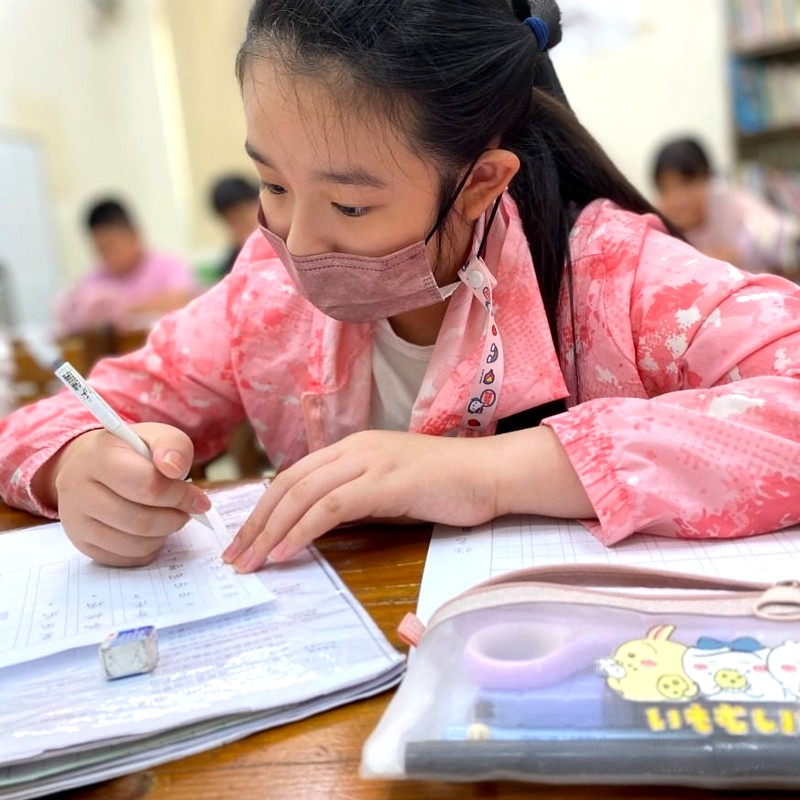

大班直升小一，坐不住、寫作業哭天搶地？
幼稚園到小學作息巨變，握筆無力、注意力分散，回家光寫三行字就耗盡全家人的耐心。
尚學引導解法
↳ 分段漸進專注 ＋ 握筆坐姿細緻雕琢
採分段漸進引導，一筆一畫建立工整筆順，把大作業拆解成小成就，孩子在班內安心完成，重拾自信！
📎

細心矯正握筆常規


📱 追蹤尚學社群・看見孩子最真實的成長足跡
同步連線尚學三大官方社群平台！即時更新最新招生資訊、親師專欄、課後點心日常與精彩動手實作短影音。
【把世界議題搬進課堂，把成果變成闖關遊戲！】
家長最想知道的「自主學習」如何從小扎根？從問題假設到自信登台發表，看見孩子眼底發光的蛻變。
【午後活力點心充電，靜心沉澱投入作業】
放學回班享用美味現備的午後點心充電！洗手整理書包、抄聯絡簿，在專注引導節奏中靜心完成作業。
【指尖上的三原色魔法與手作微縮世界】
捕捉孩子最純真專注的瞬間！每週更新課堂動手捏塑、科學小實驗與戶外探訪短影音與限時動態。